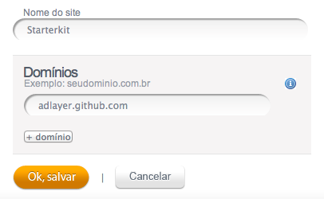
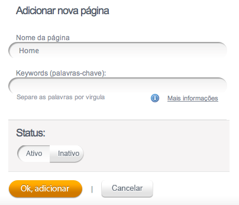
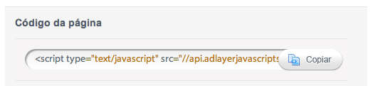
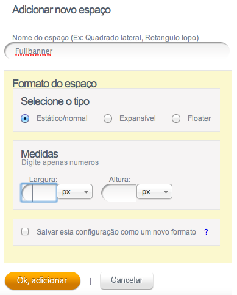
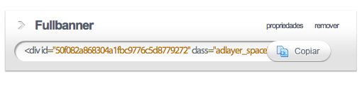
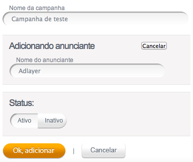
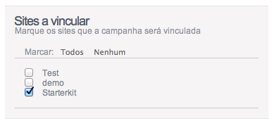
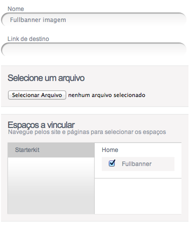

Clique com o direito neste link e salve a imagem de destino para usa-la como peça publicitária.
Faça login em sua conta Adlayer e siga os passos abaixo:
- Adicionando um site

-
Adicione um site com o nome “Starterkit” e no campo domínio preencha com “adlayer.github.com”.

- Integrando a página
-
Dentro do site criado (starterkit), adicione uma página chamada “Home”

- Copie o código de integração da página e cole no editor ao lado na linha 1

- Integrando um espaço publicitário
- De volta ao Adlayer, adicione um “espaço” com o nome “fullbanner” (dentro da página Home).

- Copie o código do espaço (passando o mouse sobre o nome “fullbanner”).

- Cole no editor ao lado na página 76
- Vinculando uma campanha
- Encontre e selecione a aba “Campanhas” dentro do site
- Clique em “vincular campanha” para criar uma nova campanha
- Dê o nome de “Campanha de teste”
- Adicione “Adlayer” como novo anunciante

- Certifique-se que o site “Starterkit” esta marcado na segunda tela.

- Adicionando uma peça publicitária
- Adicione uma nova peça na campanha com o nome “Fullbanner imagem”
- Vincule a peça no espaço “Fullbanner” da página “Home” do site “Starterkit”.

A peça deve aparecer aqui: